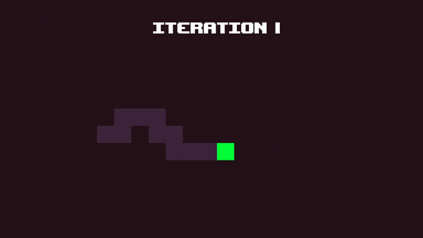
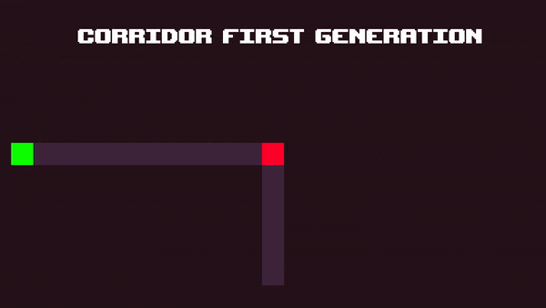
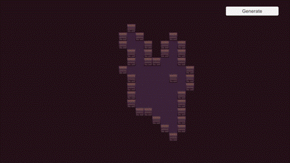
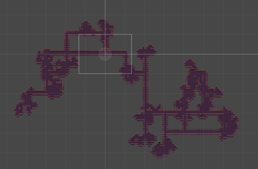
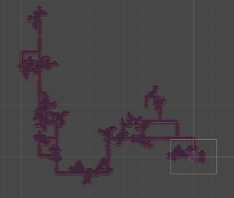
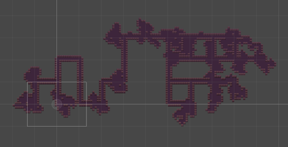
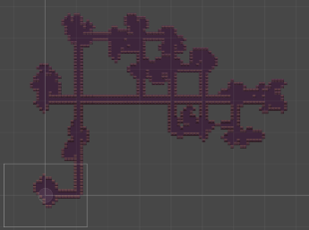

Previous Work
Procedurally Generated Dungeon Crawler Prototype

For my Individual Games Technology Project - also known as my Final Year Project, I decided to study into the concept of procedurally generated game levels. I thought the best way to explore this topic would be to make a 2d dungeon-crawler game, where every dungeon is procedurally generated before playing, and is then regenerated upon game replay.
After some research, I decided that I would generate my levels using a method of generation known as The Random Walk. The random walk consisted of an entity choosing a cardinal direction at random, taking one step in that direction, and then picking a new direction, repeating this process for however long specified. This would result in a single path. To generate a room-like shape with this method, I can repeat the process using the same start point.
This gives us a single room, but for a dungeon layout we need a few rooms connected by corridors. Fortunately, we can use the random walk generation to also give us our corridors - instead of picking a new direction after every step, what if we picked one direction and moved x amount of steps in that one direction? The result would then be a straight path, but what if at the end of that path we had a 50% chance to either generate a room, or generate another corridor? That way we would have both rooms and corridors. This is known as corridor-first generation, as - in a sense - we are generating corridors before rooms.
Here are both of the implementations within Unity:

And here are some examples of full dungeon layouts when generated:
   Pizza Time
During my Junior Collaborative project, I worked as a Junior Technician alongside one Senior Technician on Pizza Time - a game where the player plays as a flying pizza and has to collect as many pizza toppings before time runs out. Some features that I worked on include:
The vehicle pathing system
The turrets and homing birds
The spin-dash mechanic
The pizza sauce-fire mechanic
Pizza Time can be downloaded and played from itch.io:
The Little Sapling
The Little Sapling is the game I designed with a team Juniors and Seniors for my Senior Collaborative Project. This time, I was the Senior technician on the group, working with one junior technician. I was in charge of developing features as well as managing and overseeing what the other technician was doing via Jira.
The Little Sapling is a 3d puzzle platformer about a little sapling character who has to make it to the end of the level by solving puzzles using a hose attached to his back that he can spray various liquids out of.
A proof-of-concept video of the game after a week in development:
A demonstration of the player using the water hose to hit a target that opens a door

The game featured crates that could be opened by spraying an acidic liquid onto the crates, revealing a bunch of gems that the player can then pick up.

KEEP SHOOTING
KEEP SHOOTING is a game I made in the second year of my degree, for the Indie Game Development module. The module included documenting, creating and polishing a game from start to end completely independently (including visual assets). The game is a 2d platformer-shooter where the player has to fight their way to the end of a level. They play as a square, having to fight through armed shapes to reach the end.
Developing this game allowed me to learn a lot about how a lot of different systems would be implemented - which would later be seen in future projects including my Final Year Project listed above. It also helped me to understand the pitfalls and issues of certain implementation techniques that I was able to reflect upon after the project had ended.